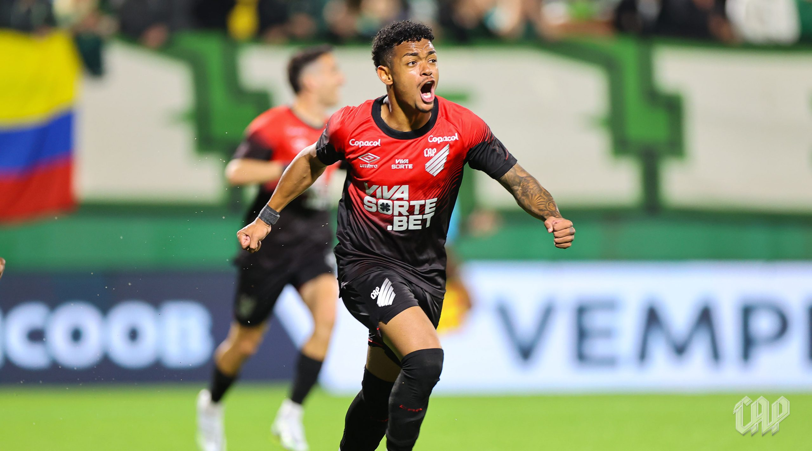
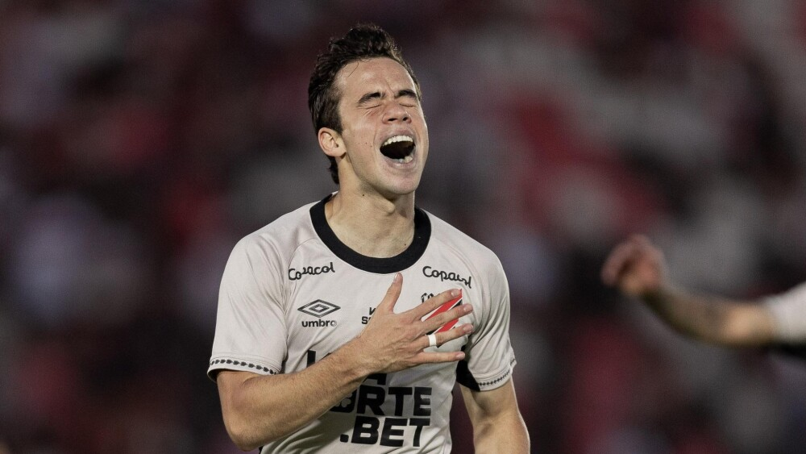
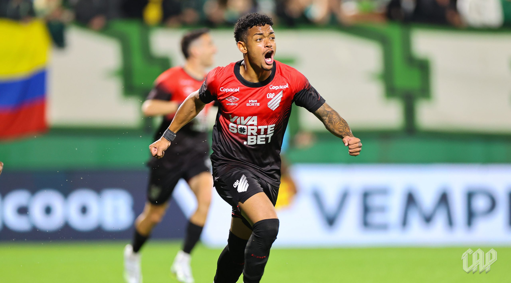
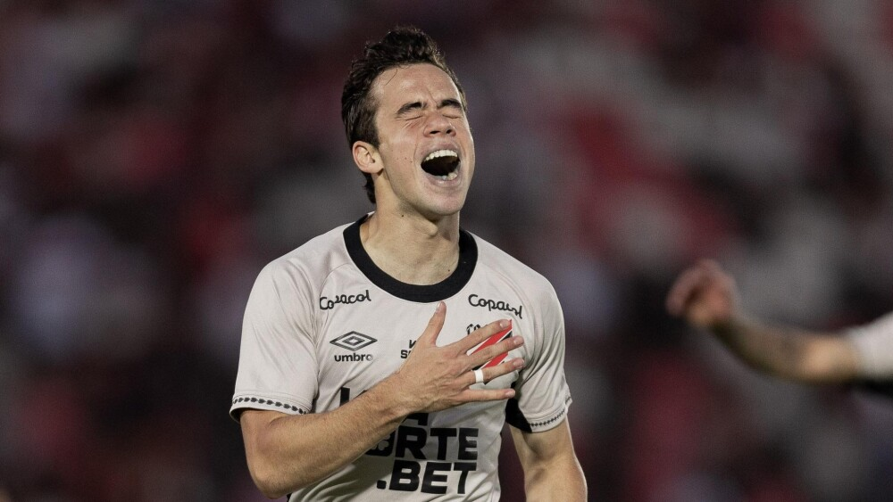

.svg) Club Athletico Paranaense
Club Athletico Paranaense

Bem-vindo ao Portal do Furacão
Um portal com informações do Club Athletico Paranaense — história, elenco, torcida, curiosidades e títulos. Saiba tudo sobre o maior do estado do Paraná aqui. Nós somos o Furacão!
Galeria / Destaques
 



Use os botões para navegar ou aguarde a rotação automática.